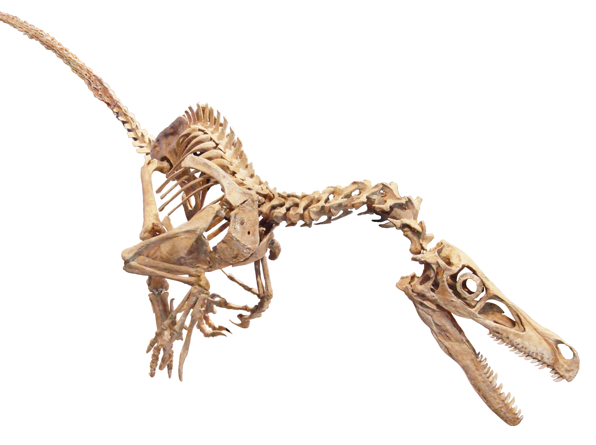

History:

The Velocriraptor were first discorvery on August 11th 1932, by Peter Kaisen.
In 1924, museum president Henry Fairfield Osborn designated the skull and part of the manus, and called it the Velociraptor<./p>
The name velociraptor is pulled from the Latin words velox (swift) and raptor (robber or plunderer) and refers to the animal nature and being a carnivore.
Appearance:
Unlike in the movies, velocriraptor are about 1.5–2.07 m (4.9–6.8 ft) long, approximately 0.5 m (1.6 ft) high at the hips, and weighing about 14.1–19.7 kg (31–43 lb).
It has feathers or quills all around and covering it's body.
The skull of Velociraptor is about 23 cm (9.1 in) long.
Other:
The velociraptor shares simllar traits with the dromaeosauridae as the are in the same subfamily.
Velociraptor are also small they are roughly the size of a turkey, considerably smaller.
"That doesn't look very scary. More like a six-foot turkey".